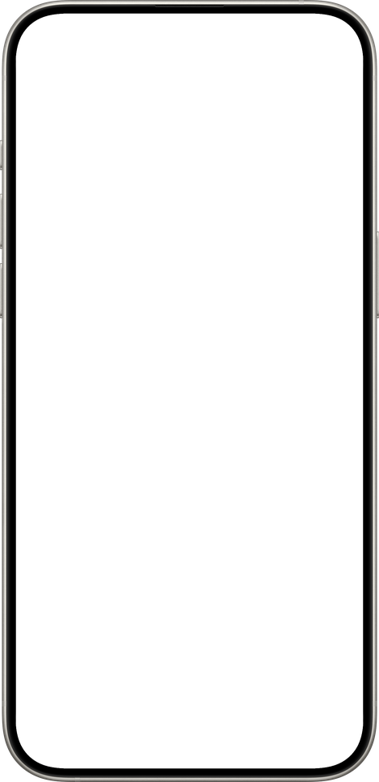

Export a bar chart race as an MP4
A real video file, up to 3840×2160, written frame by frame, not a recording of a browser window.

Why screen recording is the wrong tool
Most bar chart race tools live in a browser and hand you an embed or a GIF. To get a video, people screen-record the animation. That has three costs, and all three end up in the finished upload: the frame is the size of a window rather than the size of the format, the frame rate wobbles with whatever else the machine is doing, and every re-record comes out slightly different.
Chart Maker records the chart the way an offline renderer does: it loads the page at the exact size of the finished frame, asks it for one position on its timeline, captures that frame, and asks for the next; however long each one takes.
The settings
| Setting | Options | What to pick |
|---|---|---|
| Shape | 16:9 or 9:16 | YouTube, or Shorts / TikTok / Reels |
| Size | 3840×2160 or 1920×1080 | Full for YouTube, half for short-form |
| Frames per second | 30 or 60 | 30 is plenty; 60 doubles the export time |
How long it takes
Measured on an Apple silicon Mac, a 4K export runs at roughly five frames a second, so a minute of finished video is around six minutes of exporting. Half size is four times fewer pixels and correspondingly quicker, and 1920×1080 is what a Short needs anyway. The app stays usable while it runs, and Stop leaves no half-written file behind.
Codec
H.264 in an .mp4, generously bitrated. The file exists to be uploaded, and flat colour with hard edges is where compression shows first. Every platform and every editor takes it without conversion.
Getting the length right
The runtime is the number of points in time multiplied by the pace. Drag the pace slider and the finished length updates beside it, so you can aim at a target (under a minute for a Short, one to three minutes for YouTube) before you spend the render.
Questions
Can I export a transparent background?
Not today. The export is H.264 in an .mp4, which has no alpha channel. You can set the background to any colour, or put a photograph behind the chart.
Does 60fps make the animation smoother?
Slightly, and it doubles the export time. The smoothness of the movement is set by the interpolation between points in time, not by the frame rate.
Make one from your own data
A native Mac app. Free to download, free to export at full resolution, one payment to remove the mark.
Download on the App Store